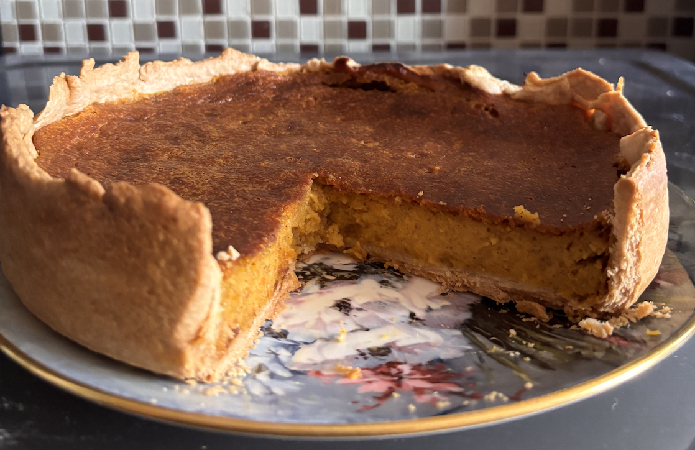
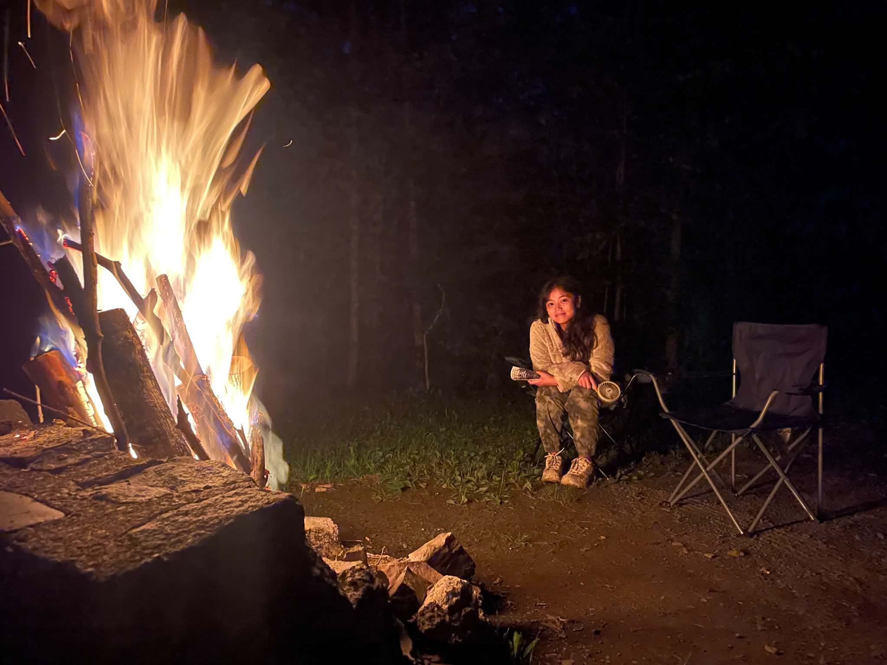

Dough Therapy
Every other Sunday, you'll usually find me baking. My husband and I are currently obsessed with tiramisu and cheesecake. It’s messy, it’s loud, and it’s the best part of my week.

Every other Sunday, you'll usually find me baking. My husband and I are currently obsessed with tiramisu and cheesecake. It’s messy, it’s loud, and it’s the best part of my week.

Camping has become my favorite way to slow down. Fresh air, campfires, and slow mornings remind me that not every problem needs an immediate solution.
Nature takes my breath away, sometimes quite literally. Somewhere between winding trails, fresh air, aching legs, and breathtaking views, I keep finding reasons to fall in love with it all over again. Perhaps that's life in a nutshell: a little struggle, a little wonder, and countless reasons to keep going.
My best thinking happens when I'm not trying to think at all, such as during a crowded subway ride or while taking a short stroll in the neighborhood. Those quiet moments leave room for questions that rarely fit into everyday conversation. I don't expect to have the answers, I simply enjoy following the logic wherever it leads. These are the questions I am currently pondering...
"As AI increasingly automates white-collar work and advances in robotics and machinery continue to displace blue-collar labor, I am interested in the socio-psychological implications of a future in which human contribution is no longer economically necessary. One possible outcome is "functional extinction," in which humans retain biological survival through state support but lose economic agency. This raises a broader question:
"Then, under what conditions do consumers prioritize psychological meaning, identity, and autonomy over functional efficiency and economic savings? And if technology makes almost everything cheaper and more accessible, will consumers increasingly pay for things that make them feel uniquely human?"
"We use stories to construct our identities, communicate who we are, and make sense of the world. Yet, in an economy increasingly built around attention and content consumption, we may be outsourcing the very narratives through which we construct meaning. Are we becoming better at finding ourselves in other people's stories while becoming less capable of writing our own?"
"What does the constant birth of new brands reveal about the conditions under which brands can survive?"
As part of a branding psychology project, I explored how perceptions of me change across different levels of social closeness. I surveyed 21 people—from strangers to close friends—to understand how relationships shape personal brands. The findings revealed both expected patterns and surprising blind spots in how I present myself.
Hover over the rings to see the data on the right.
What strangers & acquaintances see.
The energy shared with friends.
The deep traits unlocked by intimacy.
Most people typically mentioned positive traits in the first few words, and some of them with higher levels of closeness mentioned negative traits. While I already see myself as clumsy, sensitive, and a perfectionist, being described as moody was something I had not considered before. Initially, this surprised me, as I do not consciously perceive myself that way. However, reflecting on it further, I realized that my indecisiveness, especially when friends ask to make spontaneous plans, might come across as moodiness. In those moments, my uncertainty often reflects my fluctuating energy rather than a clear yes or no. This insight helped me understand how others might interpret my behavior differently from how I experience it internally.